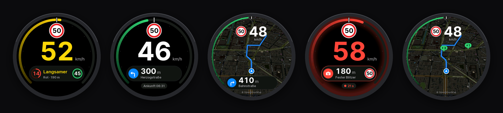

Monav Display Installer
Puts the firmware on a Waveshare ESP32-S3-Touch-AMOLED-1.75 over USB, straight from this page. After that, updates come over Bluetooth from the Monav app.
Install
How it goes
- Plug the display into the computer with a USB-C cable that carries data.
- Click Connect and install and pick the board in the browser's list (it shows up as
USB JTAG/serial debug unitor similar). - For a first install, let it erase the device. Erasing also forgets a paired iPhone.
- When it's done, the display restarts and shows Bereit zum Koppeln with a four-digit code. Pair it in Monav under Settings › Display in the car.
If the board doesn't show up
- Hold BOOT while plugging the cable in (download mode), then try again. Press RST or replug afterwards.
- Charge-only cables don't work. Try another one, or another port.
- On Linux, your user needs access to serial ports (the
dialoutgroup).